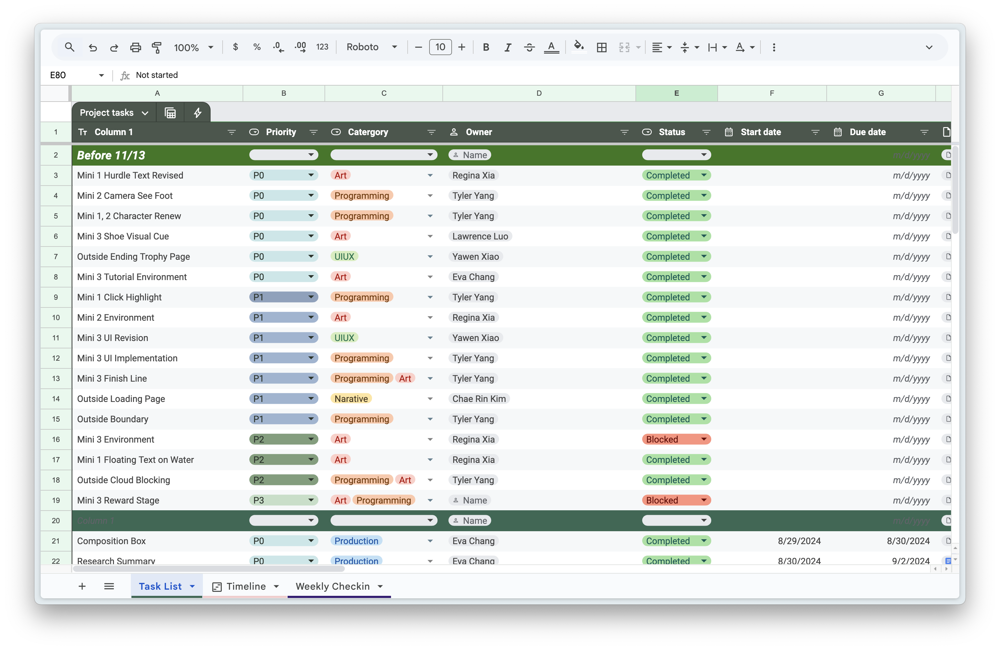
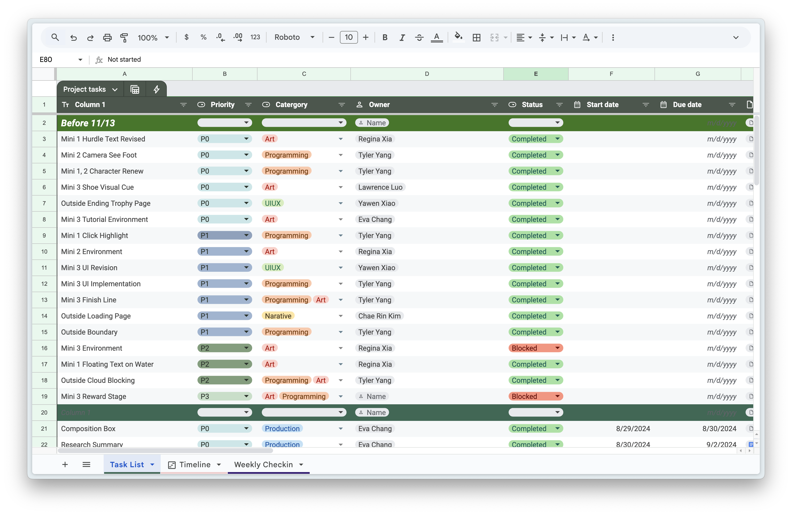
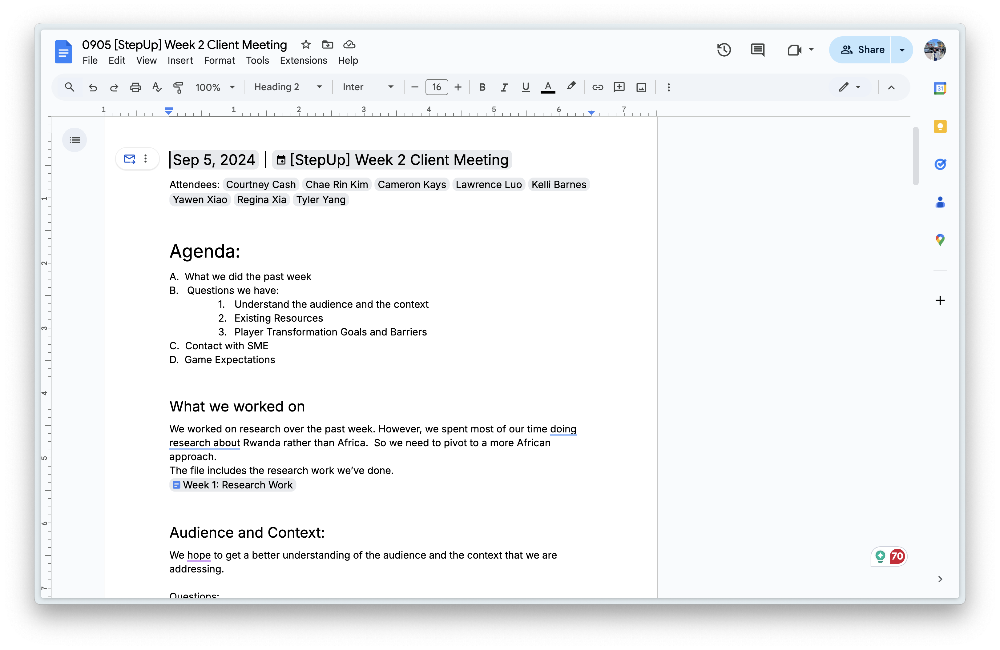
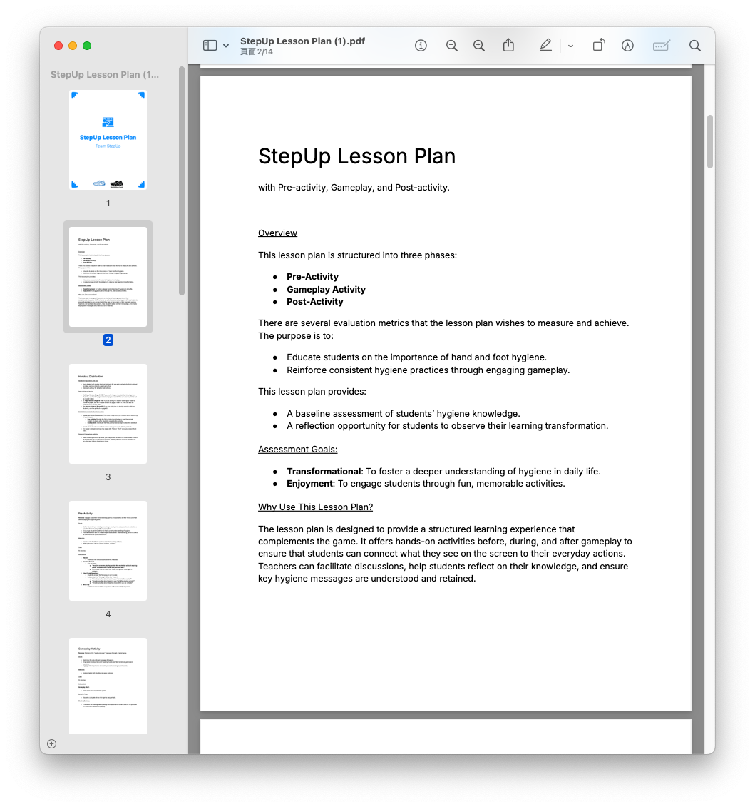
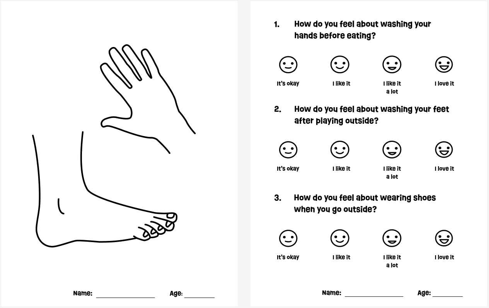

My Role
Producer + Lesson Designer
Tools
Google Workspace, Unity Engine
Team
CMU ETC Fall 2024 Project
Team StepUp
Timeline
2024/08 - 2024/12
01. Overview
StepUp: Hygiene Hero Cup
Transforming Hygiene Education Through Interactive Gameplay
As the producer of StepUp, I led my team in developing Hygiene Hero Cup, a 3D interactive game aimed at promoting essential hygiene practices like handwashing and foot care among underserved communities. This project, created in partnership with the World Shoe Fund, combined educational goals with engaging gameplay, targeting students aged 10-14.
My contributions spanned time management, communication, and workshop lesson planning, ensuring the project met its ambitious objectives.
02. Production
Time Management and Goal Arrangement
Efficient Production for Maximum Impact
In my role as producer, I was responsible for managing the project timeline and ensuring the team stayed on track to meet key milestones. This involved:
- Defining Milestones: I broke down the project into weekly sprints, focusing on deliverables like game prototypes, lesson plans, and playtest iterations.
- Prioritization: I set clear priorities to balance creative development with practical constraints, ensuring high-impact features were delivered on time.
During the mid-semester crunch, I reorganized our timeline to allocate more resources to playtest preparations after recognizing the need for additional user feedback. This adjustment resulted in more actionable insights, helping refine the game for its target audience.
 

03. Soft Skills
Communication and Collaboration
Facilitating Cross-Discipline and Cross-Cultural Collaboration
Effective communication was a cornerstone of my role, bridging gaps between team members and external stakeholders:
- Internal Team Coordination: I led regular meetings and maintained a shared workspace to keep the team aligned on goals and progress.
- Cross-Cultural Engagement: I worked closely with the World Shoe Fund, project advisors, and local experts to adapt the game to the cultural and logistical realities of African students.
- Stakeholder Interaction: I facilitated interviews with educators, professionals, and students to gather diverse perspectives that informed game design.
These efforts fostered a collaborative environment that encouraged open dialogue and creative problem-solving, ensuring the project met the needs of its target audience.
04. Workshop Lesson Planning
Designing Engaging and Transformative Educational Experiences
To assess and enhance the impact of Hygiene Hero Cup, I designed and facilitated workshop lesson plans:
- Measurement and Insights: I developed pre- and post-activity assessments to measure learning outcomes and transformation in students' attitudes toward hygiene.
- Iterative Development: Lesson plans evolved based on playtest feedback, ensuring they resonated with the target audience.
One workshop included a co-design activity where students brainstormed scenarios for the game. While not expecting full design ideas, this activity provided valuable insights into their preferences and understanding of hygiene.
 05. Reflection
Impact and Growth Through Transformational Game Production
Through strategic production planning, effective communication, and hands-on lesson development, Hygiene Hero Cup achieved significant milestones:
- A functional game prototype successfully delivered for playtesting.
- Positive feedback from students and educators, highlighting the game's engaging and educational elements.
- Lessons learned on adapting educational games for cultural and logistical contexts.
This project reinforced my passion for creating transformational games. I honed my production skills, learned the importance of flexibility in planning, and deepened my understanding of how to design impactful learning experiences.